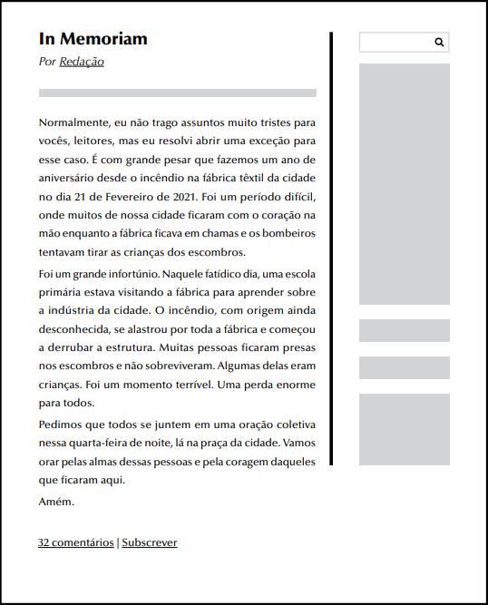
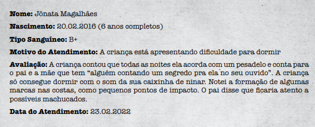
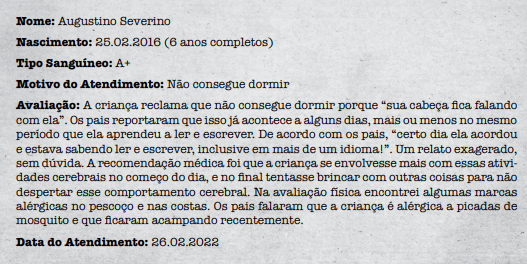
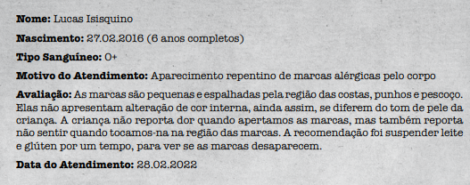
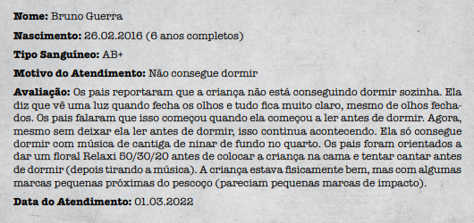
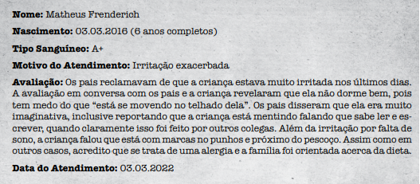
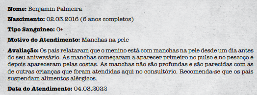
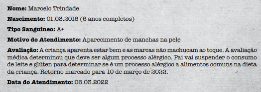

Introdução
Você é Elara uma combatente, agente da ordo realitas. Uma agencia secreta de investigação
que mantem o equelibrio da nossa realidade, impedindo que o outro lado chegue na nossa
realidade. Alem de você na sua equipe tem a Raquel (especialista) e Sarah (combatente)
Vocês estão na base da Ordo Realitas. Acabaram de receber sua primeira convocação para
uma missão de campo — o momento tão esperado depor à prova todos os meses
de treinamento árduo depois do recrutamento. Embora estejam ansiosos, vocês foram
instruídos a esperar um pouco no salão da Ordem, em uma das mesas simples.
Um secretário chama você e, pela primeira vez, vocês entram no escritório do Senhor Veríssimo, o líder da Ordem da Realidade. Como vocês sabem, ele costuma coordenar as investigações, sendo o principal responsável por proteger a Realidade das ameaças do Outro Lado. Veríssimo costuma passar as missões pessoalmente aos agentes, mas quando vocês entram na sala, ele não está lá. Em vez disso, vocês encontram Caio Leal, um agente experiente, atualmente responsável por orientar recrutas. Caio os recepciona Senta em uma das cadeiras, segura uma pasta recheada de papeis. Ele não perde tempo em abordá-los:
- Muito bem, pessoal, vocês parecem prontos. A primeira missão é um passo importante para qualquer agente e fico feliz em guiá-los nessa jornada. Vocês vão fazer uma simples investigação de reconhecimento: devem descobrir se dado evento está ligado com o Paranormal ou não e reportar suas descobertas à base, nada mais.
Caio puxa alguns documentos da pasta e os espalha em cima da mesa de madeira escura.
- Recentemente, a cidade de Tronco do Oeste reportou uma série de desaparecimentos de crianças. Todas sumiram de casa no meio da noite e seus pais deram falta logo de manhã cedo. Isso é tudo que temos até agora. Vocês serão enviados para a cidade atrás de informações adicionais e devem determinar se existe ou não a influência de forças paranormais envolvidas nos desaparecimentos.
Caio levanta, vai até a janela e observa outros recrutas treinando no pátio.
- A função da Ordo Realitas é proteger a realidade das ameaças Paranormais. Não devemos esquecer disso. Se esse caso não tiver envolvimento de forças Paranormais, devemos recuar e deixar a polícia cuidar do assunto. Sei que parece terrível, mas temos nossa missão e a polícia tem a dela. Não devemos perder vista de nossos objetivos.
O oficial então entrega um rádio comunicador para você.
- Quando tiverem certeza, entre em contato comigo, e faremos a extração de vocês para ouvir o relatório. Nos avisem e não tentem resolver o caso sozinhos, porque ainda são recrutas. Entendidos? Podem se preparar.
Caio volta a se sentar na poltrona, pegando os documentos da mesa e organizando de maneira metódica, perdido em pensamentos. Ele entrega os materiais a vocês.
Você e sua equipe vão até o arsenal da ordem e pegam seus equipamentos. você se aquipa com uma submetralhadora e um machado. Vocês pegam tudo que acham que é necessario para a missão e quando estão prestes a sair o Caio chama vocêscpara mais uma informação:
- Chegando na cidade, procurem Felipe Trindade. É o pai de uma das crianças, que procurou ajuda em fóruns obscuros da internet e nos deixou a par desse caso. Vocês devem se passar por agentes do governo, que estão investigando o caso de maneira silenciosa para não assustar a população. Mantenham esse disfarce pelo tempo que conseguirem. Boa sorte!
AS MÃOS QUE NOS ACOLHEM
Vocês viajam por poucas horas, saindo de
São Paulo e subindo a serra. Fazendas se
misturam com centros industriais afastados e vocês saem da rodovia. Uma estrada
de terra os leva à cidadezinha de Tronco
do Oeste. A van se dirige à área do centro
industrial, parando na frente de uma casa
de portão verde, aberto. O jardim da frente
está abandonado, a grama alta dificultando
a vista do interior.
Vocês batem à porta e um homem de olheiras fundas os atende. Seu cabelo está oleoso
e bagunçado e suas roupas, amassadas. Ele
encara vocês por um segundo e abre um
sorriso esperançoso:
- Vocês são os agentes? Finalmente… achei que não vinham mais! Por favor, me ajudem a achar o meu menino!
Ele encaminha vocês para dentro de sua casa.
- Eu irei responder qualquer pergunta e ajudá-los como puder.
- Até onde eu sei outras 6 crianças desapareceram. No total foram sete crianças
- certo, algo mais? - pergunta Sarah
- Não sei se isso é relevante mas meu filho sumiu bem no dia do aniversario dele, mas não sei nada das outras crianças - respondeu Felipe
- A polícia local está investigando o caso, mas por ser uma cidade pequena, os recursos disponíveis para dedicar a busca são escassos.
- então eles não sabem nada aianda? - pergunta Raquel
- É, não - respondeu Felipe
- Não foi deixado nada para tras, nenhum sinal de arrombamento ou qualquer coisa que seja.
- caraca, acho que estamos lidando com um nija - brinca Sarah
- Não é hora de Brincaeira, Sarah - retruca Raquel
- Desculpa - responde Sarah
- Não foi deixado nada para tras, nenhum sinal de arrombamento ou qualquer coisa que seja.
- caraca, acho que estamos lidando com um nija - brinca Sarah
- Não é hora de Brincaeira, Sarah - retruca Raquel
- Desculpa - responde Sarah
- A polícia local está investigando o caso, mas por ser uma cidade pequena, os recursos disponíveis para dedicar a busca são escassos.
- então eles não sabem nada aianda? - pergunta Raquel
- É, não - respondeu Felipe
- A polícia local está investigando o caso, mas por ser uma cidade pequena, os recursos disponíveis para dedicar a busca são escassos.
- então eles não sabem nada aianda? - pergunta Raquel
- É, não - respondeu Felipe
- Até onde eu sei outras 6 crianças desapareceram. No total foram sete crianças
- certo, algo mais? - pergunta Sarah
- Não sei se isso é relevante mas meu filho sumiu bem no dia do aniversario dele, mas não sei nada das outras crianças - respondeu Felipe
- Não foi deixado nada para tras, nenhum sinal de arrombamento ou qualquer coisa que seja.
- caraca, acho que estamos lidando com um nija - brinca Sarah
- Não é hora de Brincaeira, Sarah - retruca Raquel
- Desculpa - responde Sarah
- Não foi deixado nada para tras, nenhum sinal de arrombamento ou qualquer coisa que seja.
- caraca, acho que estamos lidando com um nija - brinca Sarah
- Não é hora de Brincaeira, Sarah - retruca Raquel
- Desculpa - responde Sarah
- Até onde eu sei outras 6 crianças desapareceram. No total foram sete crianças
- certo, algo mais? - pergunta Sarah
- Não sei se isso é relevante mas meu filho sumiu bem no dia do aniversario dele, mas não sei nada das outras crianças - respondeu Felipe
- Não foi deixado nada para tras, nenhum sinal de arrombamento ou qualquer coisa que seja.
- caraca, acho que estamos lidando com um nija - brinca Sarah
- Não é hora de Brincaeira, Sarah - retruca Raquel
- Desculpa - responde Sarah
- A polícia local está investigando o caso, mas por ser uma cidade pequena, os recursos disponíveis para dedicar a busca são escassos.
- então eles não sabem nada aianda? - pergunta Raquel
- É, não - respondeu Felipe
- Até onde eu sei outras 6 crianças desapareceram. No total foram sete crianças
- certo, algo mais? - pergunta Sarah
- Não sei se isso é relevante mas meu filho sumiu bem no dia do aniversario dele, mas não sei nada das outras crianças - respondeu Felipe
- Até onde eu sei outras 6 crianças desapareceram. No total foram sete crianças
- certo, algo mais? - pergunta Sarah
- Não sei se isso é relevante mas meu filho sumiu bem no dia do aniversario dele, mas não sei nada das outras crianças - respondeu Felipe
- A polícia local está investigando o caso, mas por ser uma cidade pequena, os recursos disponíveis para dedicar a busca são escassos.
- então eles não sabem nada aianda? - pergunta Raquel
- É, não - respondeu Felipe
- Ah, como todas as outras crianças, marcelo, passou com a Dra. Ruth Wendhal, ela tem as informações de como cada criança estava antes de desaparecer
- Entendi, mas você acha que essa doutora tem algo a vê com os sumissos? - Pergunta Raquel
- Não, mas ela foi a ultima pessoa alem dos pais a ver as crianças antes delas sumirem, ela pode saber de algo a mais - responde Felipe
- certo, vamos atras dela então, se descobrirmos mais coisas voltaremos aqui para te atualizar. Tchau - falou Sarah
Chegando ao endereço que o Felipe passou, vocês veem uma casa simples roxa de murro baixo com uma placa "Consultório Pediátrico
Wendhal", é aqui.
Vocês batem na porta, passa pouco tempo e um jovem atende a porta:
- Consultório da doutora Wendhal, pois não?
- nós viemos ver a doutora, temos uma assunto importantepara tratar com ela. - diz Sarah
- Vocês tem hora marcada? - a secretária responde
- Não
- Vocês precisam marcar hora então
- Nós só viemos aqui pra resolver um problema vai ser rápido, eu prometo. - diz Raquel com seu distintivo na mão
- Tá, se é tão importante assim podem entrar a doutora está no Consultório dela, fica naquela porta. - E a secretária aponta para a porta
- A gente pode entrar ou não? - diz Raquel apontando a arma discretamente para a secretária.
- Meu deus, tá, vocês podem entrar, só guarda isso por favor. - respondeu a secretária já abrindo a porta
- o Consultório é ali - a secretaria a ponta para uma porta.
No Consultório não tem muita coisa, ele é bem simples mas uma coisa te chama atenção, Um blog de noticia que a secretária estava lendo no seu computador:

- desculpa a intromissão, mas você poderia nos explicar o que aconteceu aqui? - Você fala apontando para a tela do computador
- ah claro, como diz na postagem a um ano atras a principal fonte de emprego e renda da cidade pegou fogo e por mais azar aida bem num dia em que a escola da cidade estava fazendo uma escurssão para lá.
A Raquel e a Sarah se aproximam para saber do que vocês estão falndo.
- caraca que tragedia. - falou Sarah
- Meu deus, você perdeu alguem?
- felizmente não, mas muita gente da cidade perdeu foi um periodo horrivel. Mas enfim, acho melhor vocês irem falar com a doutora logo pois daqui a pouco ele tem paciente.
Você bate na porta e uma voz dentro fala que vocêpode entrar
- Licença, nós somos investigadoras e estamos atras das crianças que sumiram, vocêpoderia responder algumas perguntas
- Ah, finalmente! Alguém interessado em resolver esse mistério que nos assola. Deixem-me mostrar algo.
A Dra. Ruth abre uma pasta escondida sob sua cadeira e pega sete prontuários médicos e os posiciona em sua mesa.
      Eu atendi todas as crianças antes de sumirem. Todas vieram porque os pais notaram marcas estranhas nas costas, punhos e pescoço. Não eram sinais de pancadas ou coisa assim... pareciam marcas de pressão, com formatos diversos. Era difícil definir. Ainda assim, não consegui encontrar nada patológico. Sintam-se à vontade para examinar os prontuários. Vou ajudar como puder
Vocês começam a investigar os documentos, porém uma barulheira começa a atrapalhar vocês e vocês são interrompidos por batidas na porta. A secretária aparece, um pouco ofegante.
- Doutora! Tentei segurar eles, mas estão armados e furiosos. São os pais das crianças. Não sei o que fazer!
A secretária é interrompida por um barulho alto de madeira rompendo! Um grupo de homens quebrou a porta do escritório e está vindo para cima da doutoura.
- A culpada só pode ser você, doutora! Todo mundo foi atendido por você antes das crianças sumirem. A culpada só pode ser você! E vocês, nosso problema é com a doutora. Saiam!
A turma se aproxima decidida. A doutora corre para trás da mesa:
- Por favor, me ajudem! Façam eles pararem, por favor!
Você e suas parceiras se olham e sabem o que precisam fazer para ter respostas
Vocês começam a conversar com a doutora, porém uma barulheira começa a atrapalhar vocês e vocês são interrompidos por batidas na porta. A secretária aparece, um pouco ofegante.
- Doutora! Tentei segurar eles, mas estão armados e furiosos. São os pais das crianças. Não sei o que fazer!
A secretária é interrompida por um barulho alto de madeira rompendo! Um grupo de homens quebrou a porta do escritório e está vindo para cima da doutoura.
- A culpada só pode ser você, doutora! Todo mundo foi atendido por você antes das crianças sumirem. A culpada só pode ser você! E vocês, nosso problema é com a doutora. Saiam!
A turma se aproxima decidida. A doutora corre para trás da mesa:
- Por favor, me ajudem! Façam eles pararem, por favor!
Você e suas parceiras se olham e sabem o que precisam fazer para ter respostas
vocês se olham e sabem que tem que parar aquelas pessoas, mas melhor não machuca-las isso pode dar problema par vcs:
- Ai, a gente ta aqui pra resolver as coisas, melhor vocês baixarem a bola e explicar o que ta acontecendo - fala a Sarah.
um dos pais se aproxima, ele ta segurando um pedeço de ferro, e diz:
- Como ja falamos antes, a culpada do sumisso dos nossos filhos é daquela maluca ali. - e ele aponta para a doutora - nós só viemos ajeitar as coisas com ela.
- Eu não tenho nada a ve com isso, inclusive to aqui ajundando os a gentes a procurar seus filhos. - se explica a doutora.
eles começam a se acalmar um pouco
- Certo, se vocês são agentes então por favor nos ajude a encontrar eles, Nos juntamos para fazer isso pois não tínhamos mais o que fazer. Nossa última opção era tirar informações da doutora. Gustavo era contra. Gustavo é o pai do Jônata, que foi o primeiro desaparecido. Ele foi o único que não veio. Fica preso em casa o dia inteiro. Por favor, nos ajudem. Vocês precisam encontrar nossos filhos, por favor! Talvez o Gustavo tenha descoberto alguma coisa, ele sempre foi curioso e já tinha trabalhado como detetive particular no passado.
- nós iremos ajudar vocês, ja estavamos fazendo isso na verdade. Você falou de um Gustavo que é detetive, poderia nos dizer onde ele mora pra a gente ir fala com ele? - você fala
Todo mundo parado - Raquel puxa a arma - Ninguém vai resolver nada com a doutora agora ou eu vou abrir um buraco na cabeça de cada um. Primeiramente que tipo de pista vocês tem pra vir até aqui e fala uma coisas dessas
todos eles abaixam suas armas improvisadas, e um homem que estava na frente diz:
- desculpa, abaixa a arma por favor nos ajude a encontrar eles, Nós nos juntamos para fazer isso pois não tínhamos mais o que fazer. Nossa última opção era tirar informações da doutora. Gustavo era contra. Gustavo é o pai do Jônata, que foi o primeiro desaparecido. Ele foi o único que não veio. Fica preso em casa o dia inteiro. Por favor, nos ajudem. Vocês precisam encontrar nossos filhos, por favor! Talvez o Gustavo tenha descoberto alguma coisa, ele sempre foi curioso e já tinha trabalhado como detetive particular no passado.
- nós iremos ajudar vocês, ja estavamos fazendo isso na verdade. Você falou de um Gustavo que é detetive, poderia nos dizer onde ele mora pra a gente ir fala com ele? - você fala
Depois que toda essa bagunça se ajeita vocês vão para o carro, e antes de atras desse tal de Gustavo você pega os prontuarios medico e da uma olhada.
Nele você observa que todos reletam falta de sono e manchas na pele, sempre proximo ao aniversario das crianças e com seu pouco conhecimento sobre o Paranormal você percebe que alguns tem relação com o elemento Conhecimento: aprendizado súbito e vozes em sonhos.
No caminho para a casa de Gustavo Vocês veem um pouco da cideda e ela é bem calma, crianças brincando na rua, adultos conversando na calçada até que vocês chegam numa rua sem saida e a ultima casa a que esta menos cuidada, parece que faz tempo que não cortam a grama e pegam as encomendas.
Saindo do carro e partindo para a entrada da casa vocês veem que a porta está entre aberta. Assim que vocês veem que à sua esquerda há uma cozinha com uma geladeira velha amarelada e uma pia com uma cadeira na frente, onde provavelmente Gustavo fazia suas refeições. Bem ao lado, uma área de serviço com tanque, roupas penduradas em um varal suspenso e uma privada. A parede da área de serviço faz divisa com a sala/ quarto, que nada mais é do que uma cama mal arrumada e um balcão com uma televisão velha em cima de uma mesa de jardim enferrujada. A casa é ainda mais triste por dentro do que por fora. Ainda assim, esse é o suposto quarto de Gustavo Magalhães e pode conter pistas úteis para o caso.
Na sala tem um lugar que te chama atenção, a mesa da TV, nela tem um monte de papeis, documentos em todos endereçados a um tal Jairo Braga. São contas da casa e alguns relativos à morte de Jairo
- aparenetmente essa casa não era do gustavo e sim de uma cara chamado Jairo - você diz
- caraca, mas por que então que falaram que essa era a do Gustavo? sera que ele comprou a casa depois que o cara morreu, mas ele teria jogado as coisas fora, não? - responde Raquel
- Acho que ele morreu e o Gustavo ficou a casa dele, eles deviam ser amigos. - fala Sarah
- deve ser
Na cozinha tem restos de comida estragada louça chuva e uma foto na geladeira, da familia de Gustavo e no final da cozimha tem uma porta que leva pra area de serviço
- aqui não tem nada demais, só uma foto e eles não parecem nada felizes nela viu - fala Raquel - acho que ter vindo aqui não vai levar a gente em lugar nenhum pelo que parecendo, o Gustavo nem aqui ta
- mas é melhor a gente continuar dando uma olhada só pra garantir você fala
A área de serviço é um espaço apertado com muitas coisas acumuladas. A roupa está pendurada nas cordas acima do tanque. No tanque tem algumas ataduras sujas e uma pomada de queimadura
- Acho que alguem tava machucado em, tem umas ataduras aqui e pomada pra queimadura - disse Raquel
O quarto tá muito bagunça, parece que ninguem arruma ele faz muito tempo, ele fede a mofo ele não limpo a muito tempo, o lugar está tão bagunçado que tá até dificil de achar algo, porem:
- Acho que agora eu achei algo que preste gente. Tem um alcapão em baixo da cama, vem me ajudar a arrastar ela pra gente da uma olhada - você fala.
Sarah e Raquel vão até o quarto. Vocês arrastam a cama, ela era mais pesada no que parecia, mas eventualmente vocês conseguem tirar ela do lugar.
- Agora sim as coisas parecem ta ficando interessantes em, bora entrar logo ai - fala Raquel ja abrindo a porta
uma escadaria em caracol. Os degraus velhos de pedra descem pela escuridão, até vocês verem um feixe de luz saindo de uma porta de madeira entreaberta. A luz oscila, revelando se tratar de chamas. Ao abrir a porta, vocês se deparam com algo inesperado. A pequena sala subterrânea foi ornamentada como uma espécie de templo para o filho de Gustavo, com uma série de velas distribuídas para formar um sigilo Paranormal. No centro das velas há uma criatura humanoide de costas para vocês e olhando fixamente para a foto de Jônata.
- que droga é aquela? - fala Raquel e assim que ela fala isso a criatura humanoide subitamente brilham em uma luz dourada enquanto ele se volta para vocês Quando seus olhos dourados encontram os de vocês, ele grita e a mente de vocês é tomada pelo pavor de se deparar com o paranormal Seu corpo está parcialmente queimado e repleto de sigilos de Conhecimento.
- É um existido, uma criatura de conhecimento, bora pra cime dele.
Você puxa a submetralhadora e ja desfere uma rajada de tiros contra o existido, ele da uma cambaleada para tras, mas logo se recompoe e olha fixamente na sua direção começa a gritar e correr na sua direção
Assim que ele começa a correr Sarah puxa de sua bolsa um frasco com parte de um intestino dentro, abre pega o orgão e enrola em um dos seus braços e segura em uma das pontas, ela olha para a criatura e o inestino começa a penetrar em seu braço, como se ele tivesse sendo engolido por ele, confome o orgão vai entrando no seu braço a pele de criatura vai se abrindo em feridas muito grandes e fundas, ele foi quase totalmente descarnado.
Logo que isso que isso acontece Raquel já sacou sua motosserra ligou ela e correu na direção do existido, enfiou a motosserra em sua barriga e dividi a criatura no meio.
- quem sera que era esse? - pergunta Sarah.
- Acho que esse era o gustavo, olha, ali tem uma foto do filho dele - responde Raquel
- Vamo da uma olhada aqui e ve se descobrimos algo.
Você pega o machado que está em suas costas, corre na direção dele o mais rapido possivel para que ele não tenha tempo de reagir e desferi um golpe entre a cabeça e o ombro e forçando, ate o braço ser cortado fora, depois você se distancia para que ele não te contra ataque.
Logo que você se distancia da criatura Sarah pega de sua mochila uma adaga, corta a palma da sua mão e fecha ela e na criatura começa a aparecer varias agulhas de dentro do corpo da criatura e perfurando ela de dentro para fora, a criatura da um grito ensurdecedor de dor.
assim que Sarah termina seu ritual a Raquel pega sua espingarda de cano duplo e caminha tranquilamente até o existido coloca a espingarda no peito da criatura e atira, fazendo com que o peito dele abra e ele voue para o outro lado da sala.
- Boa familia, acabamos com ele - fala Raquel enquanto guarda sua espingarda.
- certo, agora vamos investigar esse lugar, parece ter coisas importantes aqui - fala Sarah
você e Sarah vão até o ritual, e Sarah fala:
- Isso é um ritual para enfraquecer a manbrana, acho que o Gustavo acriditava que isso poderia trazer o filho dele de volta, olha - ela aponta para a parte do ritual que tem fotos e coisas do jonatan - pena que isso não da certo e ele acabou se dando mal.
- Isso é trite, o que a gente vai fala pro filho dele se ele estiver vivo?
- Não sei, mas na hora a gente descobre.
- A gente precisa fala pra ordem limpar as coisas aqui, não quero que ninguem tenha o mesmo final que ele - Sarah finaliza a conversa.
- Ai gante vem cá vê o que eu descobri - raquel fala.
Você e Sarah saem do ritual e chegando onde Raquel tá veem varios papeis encima de uma mesa
- Aqui ta o diario do Gustavo, fala tudo que aconteceu. Ô, o Jairo era um amigo do Gustavo, eles trabalhavam juntos na fabrica que pegou fogo mas Jairo não conseguiu fugir do incendio,o Gustavo lamenta muito isso. Depois que o filho dele sumiu ele veio morar aqui porque o Jairo sabia coisas do paranormal, ai o gustavo acreditava que isso podia trazer filho dele de volta, no dia do incendio da fabrica tinha uma escurssão escolar acontecendo lá e o filho do Gustavo tava na escurssão, por sorte os dois sairam vivos mas o gustavo teve varias queimaduras.
- Meu deus isso explica muita coisa, mas ainda falta o que ta pegando as crianças e acho que talvez a resposta esteja na fabrica - você fala
- concordo, mas antes vamos fala com a ordem.
você e Sarah vão até o ritual, mas Raquel chama vocês:
- Ai gante vem cá vê o que eu descobri
- Aqui ta o diario do Gustavo, fala tudo que aconteceu. Ô, o Jairo era um amigo do Gustavo, eles trabalhavam juntos na fabrica que pegou fogo mas Jairo não conseguiu fugir do incendio,o Gustavo lamenta muito isso. Depois que o filho dele sumiu ele veio morar aqui porque o Jairo sabia coisas do paranormal, ai o gustavo acreditava que isso podia trazer filho dele de volta, no dia do incendio da fabrica tinha uma escurssão escolar acontecendo lá e o filho do Gustavo tava na escurssão, por sorte os dois sairam vivos mas o gustavo teve varias queimaduras.
- Meu deus isso explica tudo que aconteceu na casa, mas ainda falta o que ta pegando as crianças e acho que talvez a resposta esteja na fabrica - você fala
- concordo, mas antes vamos fala com a ordem.
Antes de entrar na van você liga para ordem e o Caio a tende:
- Alo, Verissimo falndo.
- Oi aqui é a Karen, a agente que saiu na missão para Tronco do Oeste, a gente descobriu que o paranormal tem algum tipo de relação com o que ta acontecendo aqui como o sehor pediu.
- Certo, vocês descobriram que o paranormal está envolvido nesses casos de desaparecimento, mas não conseguiram determinar o que está acontecendo de fato. Agora vocês tem duas opções: nós Podemos enviar uma equipe de agentes assim que voltarem de uma missão, mas não sabemos quantos dias isso pode demorar. Outra opção seria vocês continuarem com a investigação, mas certamente será perigoso. Como não estou com vocês, não posso determinar suas condições de seguir com a missão.
- Nós estamos voltando então, pode mandar uma equipe mais qualificada para nos substituir
E então vocês voltam para a ordem. uns dias se passam e você está assistindo o jornal e a reportagem começa a fala sobre uma pequena cidade chamada tronco do Oeste:
- Nesta manhã um acontecimeto tragico marcou a vida dos cidadões da pquena cidade tronco do Oeste, 7 crianças que estavam desaparecidas foram encontradas mortas nos esconbros da antiga fabrica textil da cidade. Não se sabe como elas foram para lá e quem fez isso com elas, mas a policia ja está no local analisando a situação. obrigada e quando tivermos mais informações voltaremos.
FIMobrigado por jogar, É NOIS!
- a gente vai resolver isso, agora que comecei eu quero saber como vai acabar.
- Certo, boa certo, qualquer coisa me ligue novamente.
E então vocês entram na van e partem em direção da fabrica. chegando lá vocês veem uma fábrica está destruída, com as paredes comprometidas e a estrutura queimada pelo incêndio. As portas serviram para isolar os cômodos e transformá-los em fornos, o que compromete a estrutura geral do prédio
Vocês saem da van e vão entrando na fabrica pela porta frontal que está
entreaberta e se deparam com uma enorme
sala que servia como andar principal da
construção. O maquinário ainda está presente no chão da fábrica, mas completamente
tomado por cinzas dos objetos que foram
reduzidos a pó.
Ainda assim, tudo está calmo. Até demais.
e do nada um barulho os pega de surpresa. É como se
uma multidão estivesse correndo na direção
de vocês, mas tudo que conseguem ver, por
um segundo, são um par de olhos dourados
na escuridão. A criatura está aqui.
é uma figura encapuzada e alongada,
similar a uma centopeia de braços
e pernas humanoides.
Vocês são pegas desprevinidas, mas rapidamente você consegue pegar seu machado e desferir um golpe contra a criatura, mas ela já estava esperando por isso e o golpe acerta de raspão, não causando muito dano nela.
E em reação a isso ela olha para você e com uma de suas varias mãos te ataca, você cambelea para trás, ela é mais forte do que você imaginou, um corte foi aberto na sua barriga e sigilos de conhecimento ficam marcados no machucado, vozes começam a surgir na sua cabrçe, você não entende o que falam, mas isso é perturbador, o outro lado ta tentando invadir sua mente.
Depois que você toma essa porrada, Sarah pega em seu bolso umas pilhas e com elas na mão elas estrala o dedo e como um isqueiro aparece uma chama azul escuro encima de seu dedão e junto a isso a criatura começa a pegar fogo.
A criatura pegando fogo começa a aumentar de tamanho e correr na direção da sarah.
Depois que você toma essa porrada, Raquel começa a correr na direção da criatura e já vai sacando sua motosserra, liga ela e desfere um corta contra a criatura fazendo um corte muito fundo nela.
E então ela vira para a Raquel e já reage ao golpe com sua garra e corta o ombro da Raquel.
A criatura vem correndo na direção da Sarah a Raquel do seu lado saca a motosserra espera até que criatura esteja mais perto e enfia a motosserra no que pescoço da criatura, obrigando ela a diminuir de tamanho e fazendo o corte aumentar até a cabeça e dividi ela em dois, fazendo a criatura cair dura no chão.
- Boa familia, acabamos com esse bichinho ai, achei facil viu. Você tá bem Karen? - pergunta Raquel
- Eu tô bem, mas que coisa era essa?
- Era um bicho-papão, uma criatura de Conhecimento. Mas isso não é relevante agora, vamo da uma olhada aqui pra saver se as crianças estão vivas. fala Sarah
a criatura começa se afastar de você então você solta o machado no chão e pega a sua sub e desfere uma rejada de tiro contra a criatura, os tiros pegam do pescoço e sobem na direção da cabeça e assim que acerta na cabeça os olhos dele param de brilhar e ele cai duro no chão.
- Boa familia, acabamos com esse bichinho ai, achei facil viu. Você tá bem Karen? - pergunta Raquel
- Eu tô bem, mas que coisa era essa?
- Era um bicho-papão, uma criatura de Conhecimento. Mas isso não é relevante agora, vamo da uma olhada aqui pra saver se as crianças estão vivas. fala Sarah
Sarah começa a andar em direção à criatura e enquanto vai andando ela pega um pote que dentro tem um pedaço de carne crua, abre o pote pega a carne e da uma mordida, seu pescoço começa a inchar suas veias saltam para fora e ela começa a vomitar uma gosma de sangue na criatura e essa gosma começa a tomar formas meio humanoides que atacam a criatura e vão consumindo o corpo do dela até que ele começa a enfraquecer e cair morto no chão.
- Boa familia, acabamos com esse bichinho ai, achei facil viu. Você tá bem Karen? - pergunta Raquel
- Eu tô bem, mas que coisa era essa?
- Era um bicho-papão, uma criatura de Conhecimento. Mas isso não é relevante agora, vamo da uma olhada aqui pra saver se as crianças estão vivas. fala Sarah
Depois que a Raquel é atacada você larga o machado no chão pega a submetralhadora e desfere uma rajada de tiros a queima roupa contra a criatura, quase todos na cabeça, abrindo um burraco na cabeça do bicho fazendo ele cair morto no chão.
- Boa familia, acabamos com esse bichinho ai, achei facil viu. Você tá bem Karen? - pergunta Raquel
- Eu tô bem, mas que coisa era essa?
- Era um bicho-papão, uma criatura de Conhecimento. Mas isso não é relevante agora, vamo da uma olhada aqui pra saver se as crianças estão vivas. fala Sarah
Vocês veem a criatura e correm para poder se preparar, se escondem atras de umas pedras, sacam seus equipamentos e se olham
Let's go acabar com esse otario, familia! - fala Raquel.
E vocês correm em direção a criatra, vocês estão em pura sintonia é como se vocês soubessem o que cada uma está pensando, sarah pega na sua mochila um pote com sangue e mergulha sua mão nele e toca na motosserra da Raquel, a partir desse sangue começa a surgir veias na arma é como se a arma tivesse vida agora. Enquanto elas fazem isso você com sua submetralhadora atira varias vezes contra a criatura e logo após isso a Raquel já ataca com a motossera e causa um baita estrago. Nisso já deu tempo da sarah pegar outro frasco, com cinzas dessa vez, ela joga na mão assopra na direção do bicho e ele parece começa a envelhecer e diminuir de tamanho ate que ele fique muito pequeno e seco como se fosse uma mumia
- Boa familia, acabamos com esse bichinho ai, achei facil viu. - pergunta Raquel
- Que coisa era essa?
- Era um bicho-papão, uma criatura de Conhecimento. Mas isso não é relevante agora, vamos da uma olhada aqui pra saver se as crianças estão vivas. fala Sarah
Vocês seguem os rastros da criatura pelas cinzas até uma série de pequenos dutos de ar. Infelizmente, vocês são grandes de mais para passar por ali. Ainda assim, é possível seguir os dutos pelo lado de fora. A caminhada é longa, passando por uma série de locais apertados. No fim, vocês chegam em uma sala parcialmente desabada. Lá, encontram seis crianças dentro de gaiolas. São as crianças dos prontuários médicos, com exceção de Jônata Magalhães. As crianças estão assustadas e começam a chorar. Uma delas grita para as outras:
- Parem! Vocês sabem que a criatura fica irritada com nossos gritos. Já perdemos o Jônata por causa disso. Parem, por favor.
Mas elas estão em segurança, pois vocês chegaram. Vocês abrem as gaiolas, libertando as crianças.
você colocam as crianças na van e levam ela até a cidade. Lá vocês encontram o Felipe do lado de fora da sua casa, umas das crianças fica inquieta e aponta para o Felipe
- Meu pai! Para aqui!
Vocês param a van descem e tiram as crianças, assim que o Felipe vê seu filho ele corre na direção dele e abraça a criança.
- ah! obrigado por trazer eles de volta, eu vou fala com os pais das outras crianças para vir buscar elas, muito obrigado!
- De nada. Você poderia ficar com as crianças? Pois a gente precisa voltar para nossa central e finalizar nossa missão
- claro. Muito obrigado de novo.
Vocês voltam para a ordem e lá o caio já está esperando vocês. vocês contam o relatorio da missão e ele diz:
Parabens agentes, a primeira missão de vocês foi um sucesso, podem descansar logo entraremos em contato para a proxima missão.
FIMobrigado por jogar, É NOIS!